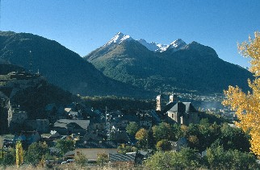
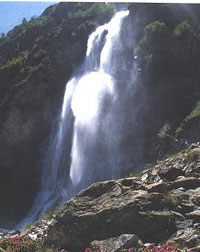
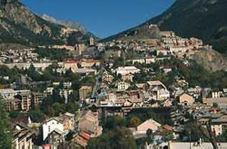
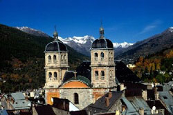

Welcome to ASIC 2005
The Fourth Annual Summer Interdisciplinary Conference (ASIC 2005) was held at the Alpe Hotel Club in Briançon, France, in the Southern French Alps, July 25–31. Richard M. Shiffrin of Indiana University-Bloomington was the organizer.

Briançon, France — site of ASIC 2005.
Dates were chosen to allow coordinated travel to both ASIC and the Cognitive Science Society Conference, held July 20–23, 2005 in Stresa, Italy, on Lago Maggiore, about 2.5 hours' travel from Briançon.
The ASIC conference used the very successful format of previous ASIC and AIC conferences: days are free for leisure activities and the talks/posters are in the later afternoon/early evening, followed by dinner. The date was chosen to make it convenient for attendees to bring family and friends. The conference was open to all interested parties, and an invitation was not needed to attend. Due to the small number of spots for speakers, the organizer selected speakers, and other participants were allowed to present posters on a day set aside for this purpose. The subject is interdisciplinary, within the broad frame of Cognitive Science.
Invitation
The conference was open to all scholars who fit the very general theme of the conference, and their family and friends. An individual invitation was not needed.

Alpine scenery near Briançon.
Conference aims
The conference covered a wide range of subjects in cognitive science, including:
- neuroscience, cognitive neuroscience
- psychology (including perception, psychophysics, attention, information processing, memory and cognition)
- computer science
- machine intelligence and learning
- linguistics
- philosophy
The conference especially invited talks emphasizing theory, mathematical modeling, and computational modeling (including neural networks and artificial intelligence). Talks were required to be comprehensible and interesting to a wide scientific audience, with speakers providing overviews of current research areas as well as their own recent progress.
Conference format
There was a single speaking session each day, excepting one day devoted to posters. The conference started Monday, July 25, with registration 14:30–16:15, a reception 15:30–16:15, followed by a full session and then dinner. The following sessions, excepting Thursday, each began with drinks and light snacks from 16:00–16:15, followed by a speaking session (with a brief mid-session break), followed by dinner. Thursday was devoted to posters, beginning at 16:00 with drinks and light snacks, followed by dinner. Dinners were buffet style, including vegetarian options, with a deluxe buffet/banquet following the final session on Saturday, July 30.
Correspondence
Annual Summer Interdisciplinary Conference (ASIC 2005)
c/o Prof. Richard Shiffrin
Psychology Department
Indiana University
1101 E. 10th St.
Bloomington, IN 47405
Email: shiffrin@indiana.edu
Registration
Registration fee for ASIC 2005 was $200 USD, covering room and equipment rentals, snacks, banquet, and more.
There were two ways to pay the registration fee:
- Send a check for the correct amount to ASIC 2005, c/o Richard M. Shiffrin, Psychology Dept., Indiana University, Bloomington, IN 47405.
- Pay online by PayPal (this entailed a $5 handling fee).
Travel & Lodging
Briançon (population 11,300) is most accessible from Grenoble (1.5 hrs), or Milan, Lyon, and Marseille (2.5 hrs); it is approximately 2.5 hrs from Stresa by car.

Briançon, in the Southern French Alps.
Although Briançon is served by both buses and trains, most attendees rented a car. The distance from Milan (or Malpensa airport) or Stresa to Briançon is about 150 miles.
Lodging: Alpe Hotel Club
Avenue du Dauphine, 5100, Briançon – Serre Chevalier, France
About 800m from the old fortress town, Vieille Ville, at 1026m
Between Parc National des Ecrins (west) and Parc Naturel Regional du Queyras (south)
Téléférique nearby to Prorel — 2566m
Amenities: rooms with TV, hair dryer, bath, phone; hotel pool, fitness room, sauna, Turkish bath.
Reservations: Telephone 33 4 92 200 200 (press 2 for the front desk); fax 33 4 92 200 143.
Dates: July 25 (Mon) to July 31 (Sun); 90 rooms held for the conference.
Rates
| Double occupancy | 52€/person/night, half board, or 312€ for 6 nights |
|---|---|
| Single occupancy | 72€/night, or 432€ for 6 nights |
| 1st child (0–11 yrs) with 2 adults | Free |
| 2nd child (0–3 yrs) with 2 adults | Free |
| 2nd child (4–11 yrs) with 2 adults | −70% of adult rate |
| 3rd person in room, any age > 11 | −40% |
Meals were buffet style; continental breakfast and dinner were included in the room rates, with drinks extra and vegetarian options included. The hotel could also provide meals to attendees lodging elsewhere: breakfast 8€/day, dinner 18€/day. The final banquet (deluxe buffet, plus wine, beer, drinks) was part of the registration fee.
Activities
Briançon has an historic old walled city, Vauban, southeast of the new city and the hotel, and sits at 1,200 meters at the start of the Serre Chevalier valley — home to France's 4th-largest ski resort, with cable cars open in summer.

The historic fortified town of Vieille Ville, near Briançon.
Not far west of Briançon lies Parc National des Ecrins, with many high peaks topped by Barre des Ecrins at 4,102 m; Parc Naturel Regional du Queyras lies to the southeast. Both parks are rich in botanical treasures, wildlife, scenery, and trails.
The area has a tennis club, swimming club, bowling, and a large health club/fitness center. Both the Tour de France and the Giro d'Italia typically route through Briançon and its nearby mountain passes. There are many marked bike touring routes (VTT), hiking trails from town and throughout the national parks, and quite a few Via Ferrata nearby. There is sailing at Lac de Serre Ponçon (Europe's largest lake), plus rafting, kayaking, airboats, canyoneering, parapenting, mountaineering, rock climbing, and caving, with plentiful firms and local guides.
Possible activities
- Hiking, biking, Via Ferrata
- Mountaineering, fitness/health club, rock climbing
- Rafting, kayaking, parapenting
- Air boats, canyoneering, bowling
- Wildlife/botanical touring, swimming, caving
- Tennis, sailing
Schedule
Tentative schedule for ASIC 2005 (as of May 27). All times are evening (PM) unless otherwise noted.
| Day | Time | Session |
|---|---|---|
| Mon, July 25 | 4:15–6:15 | I: Embodied Cognition: Grounding Perception and Cognition |
| 6:30–8:30 | II: Language and Text Processing | |
| Tue, July 26 | 4:15–6:15 | III: Induction of Concepts |
| 6:30–8:30 | IV: Category and Concept Formation | |
| Wed, July 27 | 4:15–6:15 | V: Visual Features and Visual Processing |
| 6:30–8:30 | VI: Perception, Action, Decision, Memory | |
| Thu, July 28 | 4:00–8:30 | Poster session |
| Fri, July 29 | 4:15–6:15 | VII: Memory and Learning |
| 6:30–8:30 | VII (cont'd): Memory and Learning | |
| Sat, July 30 | 4:15–6:15 | VIII: New Methods, Results, Developments |
| 6:30–8:30 | VIII (cont'd), followed by closing Banquet |
Contact
Email was the preferred way to reach the organizer.
Conference organizer
Rich Shiffrin
Indiana University – Bloomington
shiffrin@indiana.edu
Postal address
Annual Summer Interdisciplinary Conference (ASIC 2005)
c/o Prof. Richard Shiffrin
Psychology Department
Indiana University
1101 E. 10th St.
Bloomington, IN 47405
Webmaster / conference coordinator
Krystal Klein, Indiana University – Bloomington — krklein@indiana.edu